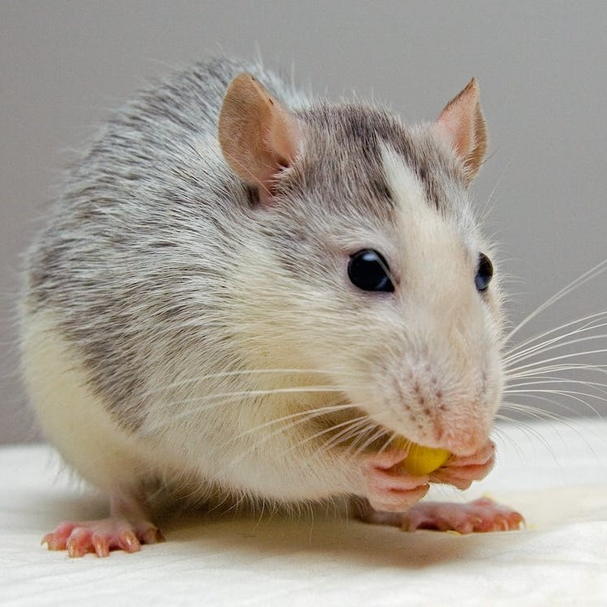
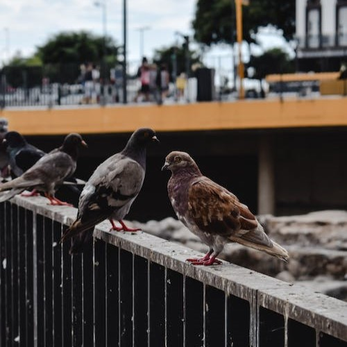
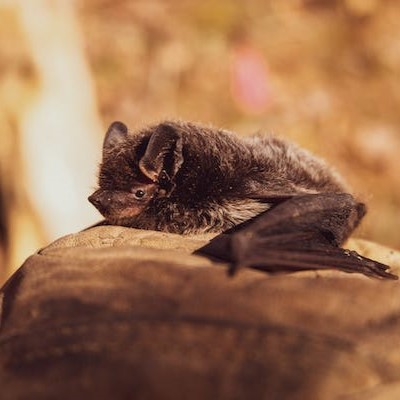
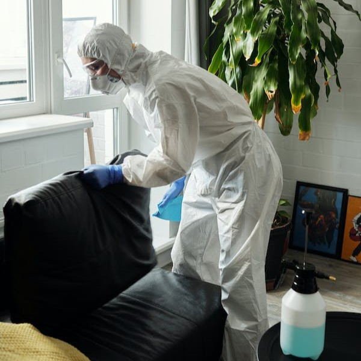

Nuestros Servicios
Control de Insectos y Aracnidos:

Contamos con una gran variedad de productos insecticidas y aracnicidas de primera calidad (BAYER, CHEMOTECNICA, GLEBA). A su vez disponemos de todas las maquinas para poder utilizar en las distintas técnicas de aplicación (pulverización, moto pulverización, pulverización en frio ULV, termo nebulización). Siempre adaptándonos a las necesidades del cliente y con el mayor profesionalismo, respetando todas las medidas de seguridad correspondientes.
Control de Roedores:
Abordamos la problemática con cebos anticoagulantes (secan al roedor y el mismo no despide olores nauseabundos), los mismos son colocados en estaciones cebaderas para su correcto control y seguimiento. También trabajamos con otras técnicas de control (trampas pegamentosas, trampas jaula, trampas guillotina, etc.)
Ahuyentamiento de Palomas:
Confeccionamos el programa que mas se adapte a las necesidades del cliente, para ello ofrecemos un numero variado de técnicas de ahuyentamiento de aves, como ser pinchos (no daña a la paloma solo no permite que se apoye en el lugar en donde son colocados), repelentes en aerosol, repelentes en gel, redes, discos holográficos, etc.)
Ahuyentamiento de Murcielagos:
Utilizamos AEROBAT, el mismo es un disociativo que no daña al murciélago, sino que altera su conducta produciéndole repulsión y haciendo que abandone el lugar. AEROBAT es biodegradable y seguro para el medio ambiente y contiene además un poder desinfectante contra los hongos que producen el guano de los murciélagos.
Desinfeccion Bactericida:
Empleo de desinfectantes con sales de amonio cuaternario aprobados por SENASA Y ANMAT, los cuales atacan virus, bacterias, hongos, esporas, levaduras, etc.
Otros Servicios
- Análisis bacteriológico del agua
- Limpieza de tanques.
- Mantenimiento de espacios verdes.
- Mantenimiento edilicio.